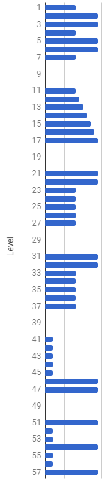
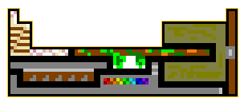

Solution: Pride and Accomplishment
Answer: GRACELESS
Written by Lewis Chen
Upon opening this puzzle, you see five premium lootboxes to open. (They are sorted by alphabetical order of unlock code, and also have enumerations on the box.) Also, there is a box to input “unlock codes”, whatever they are. This seems to suggest that we want to somehow find five codes to unlock the five boxes. I guess it’s time to open up the normal lootboxes...
Upon opening hundreds or even thousands of lootboxes, it should be evident that there is a structured template that all loot follows:
[modifier1] [modifier2] [modifier3] [base item] of the [animal] (level [level])
The following facts won’t be evident to the solver, but they are true and make solving much easier:
- The five different subpuzzle parts are independent of each other and can each be solved separately.
- For the sake of easiness of generation, items are also history-independent and generation is stateless, at least up to the order of how the PRNG generates things.
At any rate, let’s dive right into the subpuzzles:
Subpuzzle 1
Several modifier1’s have the same first and last letter, R and S; several have the same second and second last letter A and W, and so on. Combining these you get RAINBOWS, which can also look like a rainbow (if you squint a bit):
???N*B??? ??I O?? ?A W? R S
It is possible to derive the answer via other means as well. For instance, as a consequence of the actual mechanic, the letters R, A, I, and N occur disproportionately often in the first, second, third, and fourth position respectively; likewise, the letters B, O, W, and S occur disproportionately often in the fourth to last, third to last, second to last, and last position respectively. (Unfortunately B and W, being rarer letters, don’t end up being the most common letter in their position.)
Subpuzzle 2
Each of the modifier2’s have at least one of four trigrams: LIG, IGA, GAN, AND. Therefore, the answer is LIGAND. The mechanism sort of involves joining things up, like a ligand.
Subpuzzle 3
This puzzle relies on noting that there is a perfect correlation between the modifier3’s and the animals. Furthermore, the modifier3’s associated with each animal are all approximately synonymous to the same thing, and it turns out that they can also modify the animal to produce a certain exact species:
| crimson, ruby, carmine, rouge, bloody, vermilion, sanguine, scarlet | Red wolf Canis rufus |
| island, Hawaiian, Tahitian, Samoan, tropical | Polynesian rat Ratus exulans |
| uninterested, detached, apathetic, distant, aloof, nonchalant, unresponsive | Indifferent eel Ethadophis akkistikos |
| normal, average, mundane, mediocre, standard, ordinary | Common myna Acridotheres tristis |
| maple, yew, balsa, oak, willow, pine, birch | Wood grouse Tetrao uragallus |
| dappled, speckled, dotted, patchy, sprinkled | Spotted hake Urophycis regia |
| sovereign, noble, monarch, ruler’s, emperor’s, patriarch | King rail Rallus elegans |
The binomial names of the animals have initials CR, RE, EA, AT, TU, UR, and RE again. The only word that contains all 7 bigrams exactly once (or twice in RE’s case) is CREATURE.
Subpuzzle 4
There is one base item for each letter of the alphabet. They can be easily divided into weapons and armors. The initials of the armors anagram to INOCULATE. (Yes, the anagramming is a little unfortunate but pretty much needed.) The word “inoculate” can mean to “protect”, something that the armors / defensive items do more directly than the weapons.
Armors: A C E I L N O T U
Armet, Cuirass, Eyeshield, Iron-mail, Linothorax, Neckguard, Overcoat, Tunic, Uniform
Weapons: B D F G H J K M P Q R V W X Y Z
Bow, Dagger, Falchion, Glaive, Halberd, Javelin, Katana, Mace, Pike, Quarterstaff, Rifle, Scimitar, Voulge, Whip, Xiphos, Yataghan, Zweihander
Subpuzzle 5
This one uses the level of the items. Unlike the other subpuzzles, the levels do not follow a uniform distribution (granted, modifier3 was also non-uniform, but they are uniform within each animal), which suggests that we may want to look at the distribution more closely.
Given enough data (at least on the order of ~10000 data samples) we can generate an approximation of the actual probability distribution:
These are meant to roughly trace out the “rightmost” point of the letters B, A, T, T, L, and E, so BATTLE is the answer to this subpuzzle.
Metapuzzle
When you solve a subpuzzle, you can confirm your answer with the premium lootbox checker. Doing so gets you one of five lootpieces, complete with pixel art! They are as follows:
(BATTLE, CREATURE, INOCULATE, LIGAND, and RAINBOWS respectively)
Given the fact that they seem to be composed of larger 16x16 blocks (divided into 4x4 blocks for added detail), we might try to assemble the pieces (potentially with rotation). Additionally, the pieces are partially outlined in gold. One fairly compelling assembly that makes all of the golden borders on the exterior is as follows:
This is the periodic table (minus the lanthanides and actinides). This, along with “metal” from the flavortext suggests that we want to somehow associate some elements to the answers. It turns out that taking the first two letters and interpreting them as element symbols (subtly clued at by “open” in the flavortext) results in a metal, and as a further confirmation, each metal is within the region of the periodic table marked by the item.
| LIGAND | Li (3) | G |
| CREATURE | Cr (24) | RA |
| INOCULATE | In (49) | CE |
| BATTLE | Ba (56) | LE |
| RAINBOWS | Ra (88) | SS |
Finally, sort by element number and then index each digit in the the element number into the answer to get what this author thinks the practice of selling lootboxes is in the gaming industry (and in a somewhat self-deprecating sense, this puzzle, which was put together with little rhyme and reason): GRACELESS.
Author’s Notes
I mainly wanted to capitalize on the fairly recent EA lootbox fiasco (and the meme that followed - hence the title of this puzzle). Also it’s a little reminiscent of the MIT Mystery Hunt puzzle 50/50. Unfortunately, it’s hard to run that puzzle now. (The spinoff with a difference, and that difference is words. But actually, this puzzle solves quite differently, with five parallel puzzles rather than three steps in series, as well as being designed to be as stateless as possible.)
Due to the lack of state, it was tough to come up with mechanisms that could naturally induce an order, and indeed I had to use an unclued anagram in one subpuzzle.
Some other specific puzzle comments:
- Subpuzzle 1 (RAINBOWS): As noted in the solution, both testsolving groups found the answer in another way (funnily enough, different ways). The NB and AW pairs were tough to find good examples, whereas there were a lot more RS and IO pairs.
- Subpuzzle 2 (LIGAND): This was the first subpuzzle that both testsolving groups solved.
- Subpuzzle 3 (CREATURE): Initially this puzzle was much more inconsistent, with two rats, two kings, and a donkey that had no modifier. That turned out to not be a great idea, so I had to look for some better examples. I ultimately used this website, armed with a regex search. It turns out that well-named animals with specific genus-species initials are quite scarce actually - while I had wanted to change out one of the two RE’s it turns out that those were the best two out of a very small pool of animals.
- Subpuzzle 4 (INOCULATE): Sorry for the unclued anagram - hopefully it was at least somewhat indicated by the fact that there was exactly one lootpiece of each letter, which might suggest looking at letter sets. Additionally, it was rather tough to find armors and defensive pieces that began with certain letters, leading to weird things like linothorax, eyeshield, and iron mail which is two words. (Initially I tried to skirt by with making ironmail compound, but the first testsolving group objected.) I guess I learned that there are a lot more words for weapons than words for armors.
- Subpuzzle 5 (BATTLE): Initially the letters were wider (11 wide to be precise), but it was feared that that would require even more data collection. The new letters do have the nice property that with 7-wide with 3 spacing, each letter ultimately takes up 10 levels of space. It’s also a little unfortunate that some of the letters aren’t as clear as I would’ve hoped (the A and the T in particular), but perhaps the slanting gradient of the A may be a hint to the solution as well.
The final meta was designed and can actually be solved as a fairly pure meta (with a little bit of flavortext assistance). This was actually successfully testsolved in that state, but it was decided to add an extra jigsaw puzzle just to clue the periodic table better, plus to add some additional fun flavor. I did have fun making the pixel art assets, also imposing the aesthetic constraint that each piece had to be vaguely related to the answer (ligand as a binding spool of string, creature as a vaguely druidic staff, inoculate as yet another piece of armor, battle being a shield (a little generic), and rainbows being a rifle that presumably shoots rainbows). Incidentally, the “index with each digit” mechanic was what I initially thought was the extraction mechanism for the Fortune Cookies meta when I was testsolving that meta before finding the actual mechanism. So it got ported here.